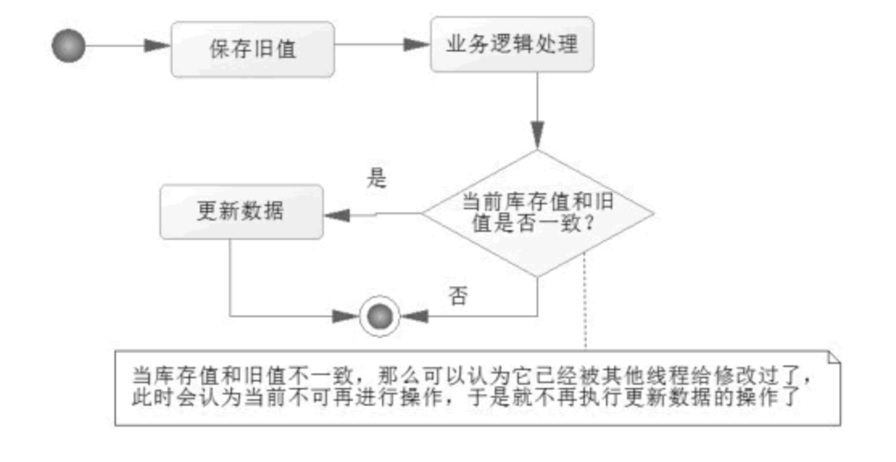
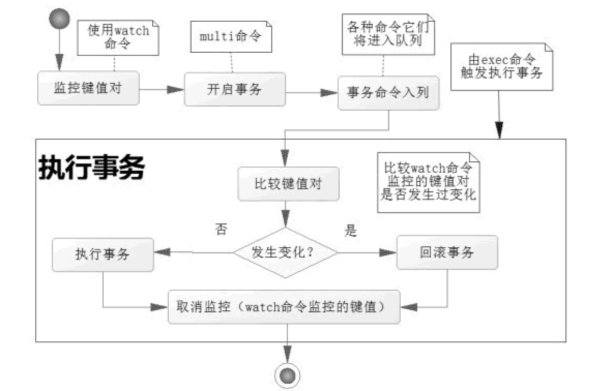
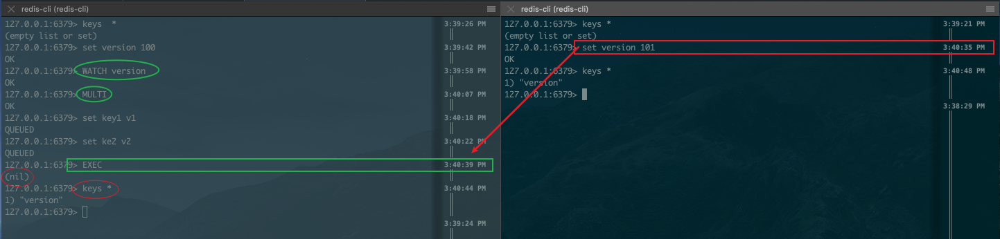
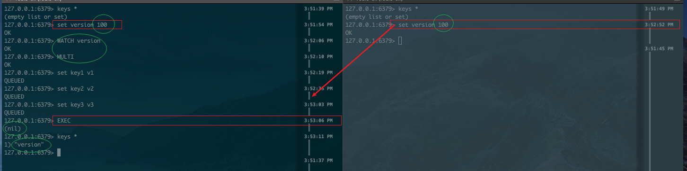

君子以遏恶扬善，顺天休命。（《周易·䷍大有·象传》）
君子以遏恶扬善，顺天休命。（《周易·䷍大有·象传》）
本文目标
- 熟悉乐观锁ABA概念
- 理解掌握redis事务以及watch回滚；
- 实战redis锁
乐观锁
乐观锁是一种不会阻塞其他线程并发的机制，它不会使用数据库的锁进行实现，它的设计里面由于不阻塞其他线程，所以并不会引发线程频繁挂起和恢复，这样便能够提高并发能力，所以也有人把它称为非阻塞锁，那么它的机制是怎么样的呢？
CAS 原理概述
在 CAS 原理中，对于多个线程共同的资源，先保存一个旧值（Old Value），比如进入线程后，查询当前存量为 100 个红包，那么先把旧值保存为 100，然后经过一定的逻辑处理。
当需要扣减红包的时候，先比较数据库当前的值和旧值是否一致，如果一致则进行扣减红包的操作，否则就认为它已经被其他线程修改过了，不再进行操作，CAS 原理流程如图 1 所示。
CAS 原理并不排斥并发，也不独占资源，只是在线程开始阶段就读入线程共享数据，保存为旧值。当处理完逻辑，需要更新数据的时候，会进行一次比较，即比较各个线程当前共享的数据是否和旧值保持一致。
如果一致，就开始更新数据；如果不一致，则认为该数据已经被其他线程修改了，那么就不再更新数据，可以考虑重试或者放弃。有时候可以重试，这样就是一个可重入锁，但是 CAS 原理会有一个问题，那就是 ABA 问题，下面先来讨论一下 ABA 问题。
ABA 问题
对于乐观锁而言，我们之前讨论了存在 ABA 的问题，那么什么是 ABA 问题呢？下面看看表 1 的两个线程发生的场景。
| 时 刻 | 线程1 | 线程2 | 备 注 |
|---|---|---|---|
| T0 | —— | —— | 初始化 X=A |
| T1 | 读入X=A | —— | —— |
| T2 | —— | 读入X=A | —— |
| T3 | 处理线程 1 的业务逻辑 | X=B | 修改共享变量为 B |
| T4 | 处理线程 1 的业务逻辑 | 处理线程 2 业务逻辑第一段 | 此时线程1在 X=B 的情况下运行逻辑 |
| T5 | 处理线程 1 的业务逻辑 | X=A | 还原变量为 A |
| T6 | 因为判断 X=A，所以更新数据 | 处理线程 2 业务逻辑第二段 | 此时线程 1 无法知道线程 2 是否修改过 X，引发业务逻辑错误 |
| T7 | —— | 更新数据 | —— |
在 T3 时刻，由于线程 2 修改了 X=B，此时线程 1 的业务逻辑依旧执行，但是到了 T5 时刻，线程 2 又把 X 还原为 A，那么到了 T6 时刻，使用 CAS 原理的旧值判断，线程 1 就会认为 X 值没有被修改过，于是执行了更新。
我们难以判定的是在 T4 时刻，线程 1 在 X=B 的时候，对于线程 1 的业务逻辑是否正确的问题。
ABA 问题的发生，是因为业务逻辑存在回退的可能性。如果加入一个非业务逻辑的属性，比如在一个数据中加入版本号（version），对于版本号有一个约定，就是只要修改 X 变量的数据，强制版本号（version）只能递增，而不会回退，即使是其他业务数据回退，它也会递增，那么 ABA 问题就解决了，如表 2 所示。
表 2 用版本号消除 ABA 问题
| 时刻 | 线程1 | 线程2 | 备 注 |
|---|---|---|---|
| T0 | —— | —— | 初始化 X=A，version=0 |
| T1 | 读入X=A | —— | 线程1旧值：version=0 |
| T2 | —— | 读入X=A | 线程2旧值：version=0 |
| T3 | 处理线程1的业务逻辑 | X=B | 修改共享变量为 B，version=1 |
| T4 | 处理线程1的业务逻辑 | 处理线程 2 业务逻辑第一段 | —— |
| T5 | —— | X=A | 还原变量为A，version=2 |
| T6 | 判断 version == 0，由于线程 2 两次更新数据，导致数据 version=2，所以不再更新数据 | 处理线程 2 业务逻辑第二段 | 此时线程 1 知道旧值 version 和当前 version 不一致，将不更新数据 |
| T7 | —— | 更新数据 | —— |
只是这个 version 变量并不存在什么业务逻辑，只是为了记录更新次数，只能递增，帮助我们克服 ABA 问题罢了，有了这些理论，我们就可以开始使用乐观锁来完成抢红包业务了。
redis 事务
在 Redis 中，存在多个客户端同时向 Redis 系统发送命令的并发可能性，因此同一个数据，可能在不同的时刻被不同的线程所操纵，这样就出现了并发下的数据一致的问题。为了保证异性数据的安全性，Redis 为提供了事务方案。而 Redis 的事务是使用 MULTI-EXEC 的命令组合，使用它可以提供两个重要的保证：
- 事务是一个被隔离的操作，事务中的方法都会被 Redis 进行序列化并按顺序执行，事务在执行的过程中不会被其他客户端发生的命令所打断。
- 事务是一个原子性的操作，它要么全部执行，要么就什么都不执行。
Redis 通过MULTI 、EXEC、WATCH等命令来实现事务功能。事物提供了一种将多个命令请求打包，然后一次性、按顺序的执行多个命令的机制，并且在事物执行期间，服务器不会中断事务而去执行其他客户端的命令请求，它会将事物中所有的命令都执行完毕。
流程
- 开启事务
- 命令进入队列
- 执行事务。
Redis事物不支持回滚操作，所以事物队列中某个命令执行错误，整个事物也会继续执行下去。
# 开启事务 |
watch
watch 命令可以决定事务是执行还是回滚，可以在 multi 命令之前使用 watch 命令监控某些键值对，然后使用 multi 命令开启事务，执行各类对数据结构进行操作的命令，这个时候这些命令就会进入队列。
如下图，在执行之前，更改了version的值，导致事务回滚,

是否可以避免 ABA 问题呢？如下图：
分布式锁
分布式锁的实现，目前常用的方案有以下三类：
- 数据库乐观锁；
- 基于分布式缓存实现的锁服务，典型代表有 Redis 和基于 Redis 的 RedLock；
- 基于分布式一致性算法实现的锁服务，典型代表有 ZooKeeper、Chubby 和 ETCD。
为了确保锁服务可用，通常，分布式锁需同时满足以下四个约束条件。
- 互斥性：在任意时刻，只有一个客户端能持有锁；
- 安全性：即不会形成死锁，当一个客户端在持有锁的期间崩溃而没有主动解锁的情况下，其持有的锁也能够被正确释放，并保证后续其它客户端能加锁；
- 可用性：就 Redis 而言，当提供锁服务的 Redis Master 节点发生宕机等不可恢复性故障时，Slave 节点能够升主并继续提供服务，支持客户端加锁和解锁；对基于分布式一致性算法实现的锁服务（如 ETCD）而言，当 Leader 节点宕机时，Follow 节点能够选举出新的 Leader 继续提供锁服务；
- 对称性：对于任意一个锁，其加锁和解锁必须是同一个客户端，即客户端 A 不能把客户端 B 加的锁给解了。
代码部分
上锁部分，
/** |
解锁部分
/** |
返回值
➜ 5锁 git:(main) ✗ ts-node index.ts |
具体的实例代码：https://github.com/simuty/Integration/blob/main/Redis/
参考链接